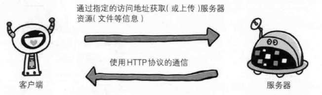
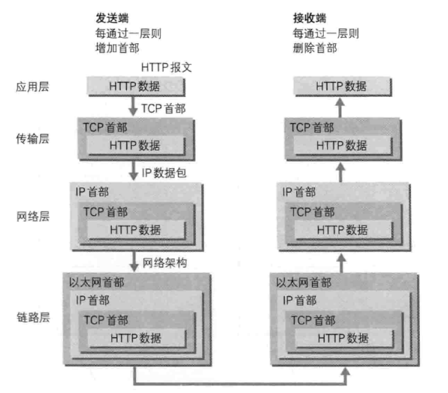
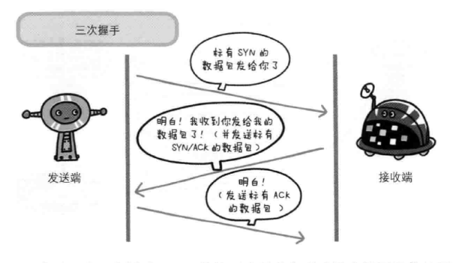
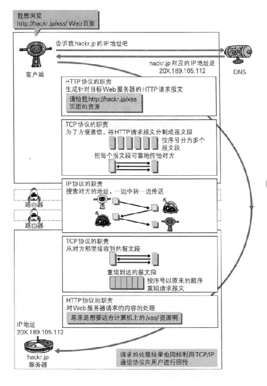

http图解系列-1
带着问题踏上http之路
之前在面试的时候，很多面试官都喜欢问:当我们再网页浏览器的地址栏输入url时候，web页面是如何呈现的，顿时哑口无言，无非考的就是问你熟不熟悉http协议而已，当时想的很复杂，甚至把在框架处理周期都说上去了，真的是基础薄弱呀，现在想想还是有点丢人，论平时读书的重要性。
最简单的回答是:

web是建立在http协议上通信的，接下来我们就带着这个问题深入学习http协议之旅
网络基础TCP/IP
通常使用的网络实在tcp/ip协议族的基础运作的，而http属于其内部的一个子集
什么是TCP/IP？
计算机与网络要相互通信，双方就必须基于相同的方法，并且需要一种规则，而这种规则被称为协议，协议中存在各种各样的内容，从电缆的规格到ip地址的选定方法，寻找异地用户的方法，双方建立通信的顺序以及web页面现实需要处理的步骤，像这样把与互联网关联的协议集合起来总成为TCP/IP。
TCP/IP的分层管理
分层是很重要的一点，可以分为四个层次，应用层，传输层，网络层和数据链路层，好处是，方便每一层的修改设计，简单
各层的作用
- 应用层:决定了向用户提供应用服务时通信的活动，预存了各类通用的通用服务，比如ftp，dns，而HTTP协议也属于该层
- 传输层:对应用层提供处于网络链接中的两台计算机之间啊的数据传输。有两个性质不同的协议TCP和UDP
- 网络层:处理网络上流动的数据包，数据包时网络传输最小的最小单位，该层规定了通过怎么样的路径到达随访计算机，并把数据包船传送给对方
- 链路层 处理连接网络的硬件部分，包括控制操作系统，硬件的设备驱动等物理可见部分
TCP/IP通信传输流

与HTTP关系密切的协议:IP、TCP和DNS
IP
- 负责传输的协议，协议的作用就是把各种数据包传送给对方，而要保证确实传送到对方，其中两个重要的条件是IP地址和MAC地址
ip地址可变换，MAC地址基本上不会更改，通信主要依赖MAC地址，而ARP协议可以将ip地址反查出对应的MAC地址
TCP
- 提供可靠的字节流服务，所谓的字节流服务是指将大块数据分割成以报文段为单位的数据包进行管理，而可靠的传输服务是指，能够把数据准确可靠地传给对方
确保数据能达到目标的原因是，TCP协议采用了三次握手策略，具体如下所示:

握手过程中使用了TCP的标志SYN和ACK
发送端首先发送一个带SYN标志的数据包给对方，接受端收到后，回传一个嗲有SYN/ACK标志的数据包以示传达确认信息。最后发送端再回传一个带ACK标志的数据包，代表握手结束.
DNS
- 提供域名到ip地址之间得到解析服务
在浏览器输入url访问这个发生了什么?
综合上述分析，这个回答再具体点,可以分为以下过程:
